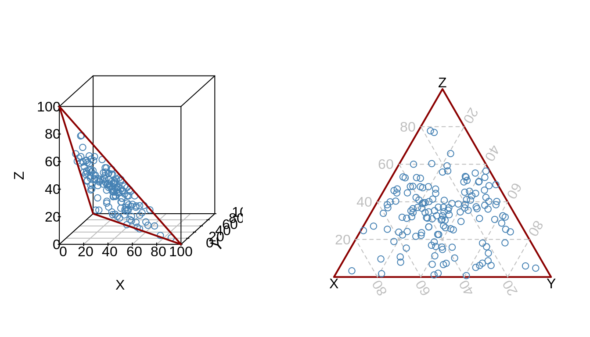

15 Introduction
15.1 Définitions
Une composition décrit les parties d’un tout comme des parts mutuellement exclusives et exhaustives.58 Par exemple, la composition élémentaire d’une céramique correspond aux teneurs des différents oxydes la constituant (les teneurs sont exprimées en pourcentages massiques, leur somme est égale à 100%).
Une composition \(x\) est donc définie comme un vecteur de longueur \(D\) dont tous les composés (\(x_{1}, x_{2}, \dotsc, x_{D}\)) sont des réels strictement positifs (\(x_{1} > 0, \dotsc, x_{D} > 0\)) :
\[\begin{equation} x = \left[ x_{1}, x_{2}, \dotsc, x_{D} \right] \forall x_{i} > 0 \tag{15.1} \end{equation}\]
Les composés portent une information relative : seuls les rapports entre ces composés sont d’intérêt, car la somme \(k\) des teneurs du vecteur composition est arbitraire. Pour un ensemble de compositions cette somme est constante et est généralement égale à 1, 100, 106, selon que l’on considère des parts d’une unité, des pourcentages ou, par exemple, des ppm, en fonction des conventions.
L’opération qui permet la normalisation d’une composition \(x\) est appelée fermeture des données (notée \(\mathscr{C}\) pour closure) et consiste à diviser chaque partie par le tout, puis à multiplier le résultat par une constante \(k\) (15.2).
\[\begin{equation} \mathscr{C}(x) = \frac{k}{\sum_{i=1}^{D} x_{i}} \left[ x_{1}, x_{2}, \dotsc, x_{D} \right] \tag{15.2} \end{equation}\]
Par exemple, dans le cas d’un objet de masse totale \(m\), décomposé en ses différents constituants de masses \(m_{1}, m_{2}, \ldots, m_{D}\), on a : \(x = \frac{1}{m} \left[ m_{1}, m_{2}, \dotsc, m_{D} \right]\).
Pour une composition \(x\) donnée, une sous-composition \(y\) est définie comme un sous-ensemble de \(x\) ayant subi une opération de fermeture (15.3).
\[\begin{equation} y = \left[ y_{1}, y_{2}, \dotsc, y_{C} \right] = \mathscr{C} \left[x_{1}, x_{2}, \dotsc, x_{C} \right] \forall C < D \tag{15.3} \end{equation}\]
En pratique, seules des sous-compositions sont généralement connues et celles-ci dépendent du problème à traiter et de la capacité à reconnaître les différents composés d’un système et à les mesurer. On ne mesure jamais l’intégralité des éléments chimiques lors d’une analyse, on ne connaît pas l’ensemble des espèces appartenant à un écosystème, certaines catégories d’objets peuvent être ignorées lors d’une étude (ou ne pas avoir été reconnues du fait de la fragmentation du matériel), etc.
Du fait de la fermeture des données, l’univers d’une composition (c’est-à-dire l’ensemble de toutes les valeurs susceptibles d’être prises par ses différents composés) est un espace particulier. Ce dernier possède une dimension de moins que le nombre de composés : bien qu’il y ait \(D\) observations pour chaque individus, il n’y a en effet que \(D-1\) valeurs indépendantes. Autrement formulé, si les \(D-1\) teneurs sont connues, sachant que leur somme est constante, la dernière teneur est connue également.
Cet univers (ou espace échantillon) peut être facilement représenté dans le cas de compositions à deux ou trois composés. Lorsque ces compositions sont projetées dans un espace réel, on constate qu’elles appartiennent toutes à un même sous-espace triangulaire (simplexe ; fig. 15.1)59.

Figure 15.1: Projection de compositions à deux (gauche) et trois composés (droite) dans un espace réel à deux et trois dimensions, respectivement. L’ensemble des points appartient à un sous-espace figuré en rouge. Dans le cas d’une composition à trois composés, ce sous-espace correspond au diagramme ternaire des trois composés.
15.2 Principes
L’analyse de données de composition est régie par quatre principes :
- Scale invariance
- La comparaison d’échantillons de tailles différentes est permise par l’opération de fermeture des données qui les force à partager la même somme \(k\). Toute analyse de ces données doit donc conduire à des résultats similaires indépendamment de la valeur de \(k\).
- Perturbation invariance
- Toute composition peut être exprimée à l’aide d’unités différentes selon les grandeurs mesurées (kg, pourcentages massiques, dm3, pourcentages volumiques, moles, pression partielle, etc.). Le choix des modalités de quantification revient alors à l’expérimentateur et plusieurs approches peuvent être également considérées comme pertinentes. Les différents composants d’une composition sont qualitativement différents : chacun portant une information qui lui est propre et il peut être utile de souligner une propriété particulière60. Malgré le changement d’unité, la composition mesurée reste la même et toute analyse statistique sensible doit permettre d’obtenir des résultats qualitativement identiques, quelle que soit l’unité choisie.
- Permutation invariance
- Le résultat de l’analyse ne doit pas dépendre de l’ordre des composants dans le vecteur composition.
- Subcompositional coherence
- Dans certaines situations, l’utilisation d’une sous-composition peut être pertinente et permet notamment l’inspection des données dans des espaces de moindre dimension.
Ainsi, ni la somme des composants du vecteur composition, ni le choix des unités, ni la séquence des composés ou l’étude d’un sous-ensemble issu d’une composition, ne doivent affecter les résultats de l’analyse.
15.3 Étendue du problème
Soient deux archéologues, Howard et Arthur qui se partagent l’étude de plusieurs ensembles de mobilier. On considère pour l’exemple la situation idéale, où chacun à reçu une moitié identique de chaque ensemble et que tous deux sont parfaitement routiniers de ce type d’étude. Howard quantifie son matériel en distinguant les catégories A, B, C et D. De son côté Arthur ne quantifie que les catégories A, B et C (tab. 15.1). Les résultats d’Arthur constituent ainsi une sous-composition de ceux obtenus par Howard et, en toute logique, les observations faites par les deux archéologues sur les catégories de mobilier qu’ils ont en commun devraient s’accorder.
| A | B | C | D | A | B | C |
|---|---|---|---|---|---|---|
| 10 | 20 | 10 | 60 | 25.0 | 50.0 | 25 |
| 20 | 10 | 10 | 60 | 50.0 | 25.0 | 25 |
| 30 | 30 | 20 | 20 | 37.5 | 37.5 | 25 |
A partir de leurs résultats, exprimés en pourcentages, les deux archéologues cherchent ensuite à mettre en évidence les relations de dépendance entre certaines catégories de mobilier. Pour cela, tous deux calculent à partir de leurs données le coefficient de corrélation entre les catégories A et B. Howard et Arthur obtiennent 0.5 et -1, respectivement, alors qu’ils étudient le même matériel.
Les définitions classiques de la covariance et de la corrélation ne respectent pas le principe de subcompositional coherence (voir l’encadré ci-après). Ce problème se manifeste particulièrement lorsque les teneurs brutes de deux composés sont représentés au sein d’un diagramme de dispersion61. Il n’y a en effet aucune garantie que les projections à partir du jeu de données initial ou d’une sous-composition conduisent à des observations similaires. Bien que ce type de représentation soit particulièrement courant, il est impossible de faire confiance aux tendances ainsi mises en évidence.6263.
Ainsi, la plupart des méthodes dédiées aux statistiques multivariées, dont la mise en œuvre repose sur l’exploitation des matrices de variance-covariance, sont inapplicables. Le recours à ces dernières requiert une transformation préalable des données, permettant de casser la contrainte de somme constante introduite par la fermeture des données.
L’approche courante lorsque l’on cherche à explorer les relations de d’inter-dépendance dans le cas d’un jeu de données multivarié est de s’attacher à la covariance et à la corrélation entre variables. Pour deux variables aléatoires \(X\) et \(Y\), la covariance est en effet une mesure de la tendance de ces deux variables à évoluer dans le même sens (indiqué par le signe de la covariance), tandis que la corrélation (covariance normalisée) est une mesure de l’intensité de la relation entre ces deux variables.
Sachant les propriétés de la covariance, pour une composition \(x\) de longueur \(D\) telle que \(x = \left[ x_{1}, x_{2}, \dotsc, x_{D} \right]\) avec \(\sum_{i=1}^{D} x_{i} = 1\), on a :
\[\begin{equation} \mathrm{Cov}(x_{1}, x_{1} + \dotsb + x_{D}) = 0 \tag{15.4} \end{equation}\]
Soit :
\[\begin{equation} \mathrm{Cov}(x_{1}, x_{2}) + \dotsb + \mathrm{Cov}(x_{1}, x_{D}) = - \mathrm{Var}(x_{1}) \tag{15.5} \end{equation}\]
Ainsi, le membre de droite de l’équation (15.5) est toujours négatif (excepté dans le cas où le premier composé est une constante), si bien qu’au moins une des covariances du membre de gauche est forcement négative.64 Autrement formulé, au moins un élément de chaque ligne de la matrice de covariance doit être négatif (soit au moins \(D\) éléments de la matrice).
Dans le cas des données de composition, la covariance entre deux composés est donc contrainte par la somme constante et dépend des autres composés également présents dans le jeu de données. De plus, la matrice de covariance est singulière.65 L’influence de la somme constante au sein de la matrice de covariance se traduit en terme de corrélation : s’agissant de compositions, le coefficient de corrélation n’est pas libre de prendre une valeur dans l’intervalle \([-1;1]\) mais correspond à une valeur arbitraire66.
L’exemple d’une composition à deux composés \(x_1\) et \(x_2\) tels que \(x_1 + x_2 = 1\) est particulièrement illustratif du problème,67 on a en effet :
\[\begin{equation*} \mathrm{Cov}(x_{1}, x_{2}) = \mathrm{Cov}(x_{1}, 1 - x_{1}) = - \mathrm{Var}(x_{1}) = - \mathrm{Var}(x_{2}) \tag{15.6} \end{equation*}\]
Soit :
\[\begin{equation*} \mathrm{Cov}(x_{1}, x_{2}) = \frac{\mathrm{Cov}(x_{1}, x_{2})}{\sqrt{\mathrm{Var}(x_{1}) \mathrm{Var}(x_{2})}} = - 1 \tag{15.7} \end{equation*}\]